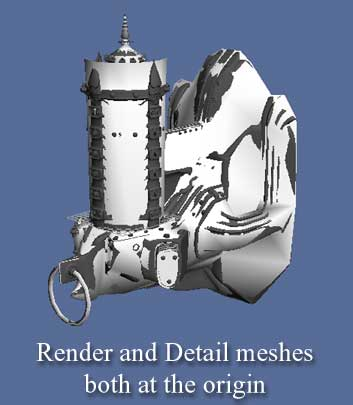
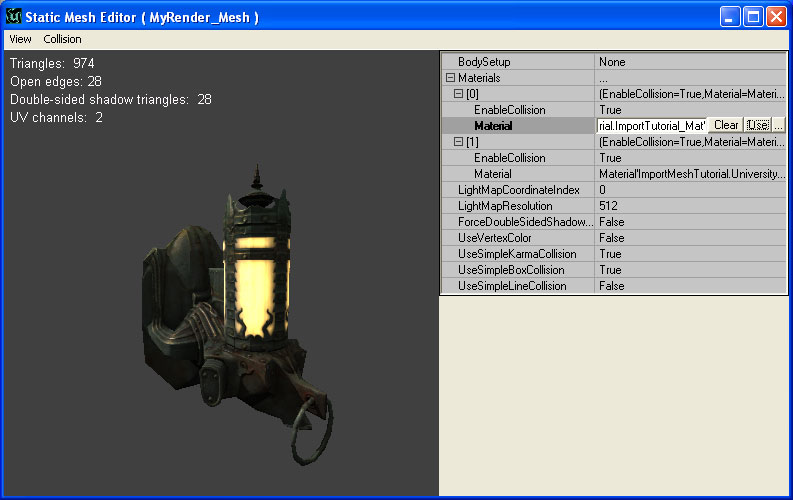

UDN
Search public documentation:
ImportingStaticMeshTutorialCH
English Translation
日本語訳
한국어
Interested in the Unreal Engine?
Visit the Unreal Technology site.
Looking for jobs and company info?
Check out the Epic games site.
Questions about support via UDN?
Contact the UDN Staff
日本語訳
한국어
Interested in the Unreal Engine?
Visit the Unreal Technology site.
Looking for jobs and company info?
Check out the Epic games site.
Questions about support via UDN?
Contact the UDN Staff
静态网格物体通道指南
概述
实时凸凹贴图：高度细分网格物体和渲染网格物体
 然后在 UE3 中把产生的法线贴图应用到一个多边形数量较少的“渲染”网格物体上，最终的结果是网格物体看上去比它实际的样子具有更多的多边形复杂性。
然后在 UE3 中把产生的法线贴图应用到一个多边形数量较少的“渲染”网格物体上，最终的结果是网格物体看上去比它实际的样子具有更多的多边形复杂性。
准备导出的内容

这点非常重要，因为 SHTools 的处理是基于渲染 (Render) 网格物体的展开图进行的。UV 简述
法线贴图的处理过程需要特殊的展开注意事项。为保证最佳效果，请确保UV没有重叠。如果所涉及到物体的几何结构是相同的，重叠堆放UV是可以的。例如，将一个物体的不同部分重叠堆放在一起并不是一个好主意，如下图： 重叠堆放UVs是可以的，比如镜像几何体的情况，如下面的截图所示：
重叠堆放UVs是可以的，比如镜像几何体的情况，如下面的截图所示：
 由于高度细分 (Detail) 网格物体根本不需贴图便能使用 SHTools 进行功能处理，因此这些限制并不适用于高精度细分模型。
由于高度细分 (Detail) 网格物体根本不需贴图便能使用 SHTools 进行功能处理，因此这些限制并不适用于高精度细分模型。
生成法线贴图
通过使用插件 SHTools 或者 3DStudio Max、Maya 或 Softimage XSI 工具进行处理，我们可以从高度细分 (Detail) 网格物体中产生法线贴图。本指南将逐步地对其进行简单的说明。 请注意在Max/Maya/XSI拥有它们自己的法线贴图工具之前，需要创建SHTools网格物体处理器和服务器。我们通常使用这些来创建我们的法线贴图。我们强烈推荐您使用类似于Maya 的3D建模包来创建法线贴图。导出几何体
将内容导入到引擎中
应用材质

再次返回到静态网格物体浏览器，点击“应用 (Use)”按钮来应用当前选中的材质。材质现在应该出现在网格物体上了。重复上述不重来为其它的材质数组元素设置材质。碰撞
使用静态网格物体 Actor
- 在通用浏览器中选择要使用的静态网格物体 (StaticMesh)。
- 右击关卡，跳转到‘添加Actor (Add Actor)’并选择‘添加静态网格物体 (Add StaticMesh)’。您将会看到网格物体出现在关卡中。